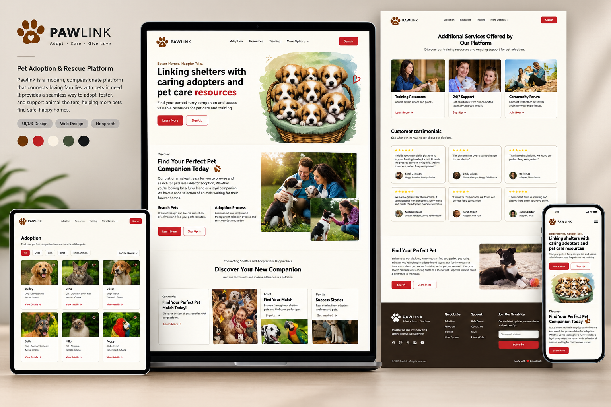
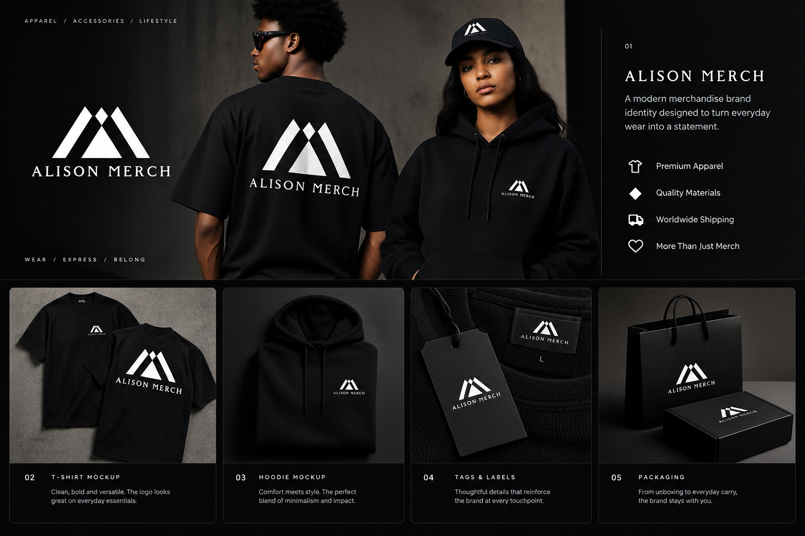
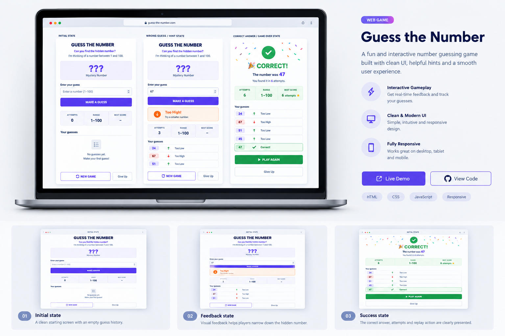
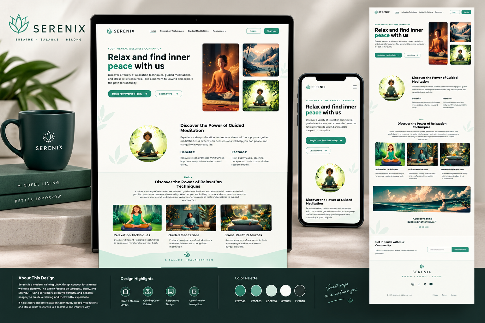
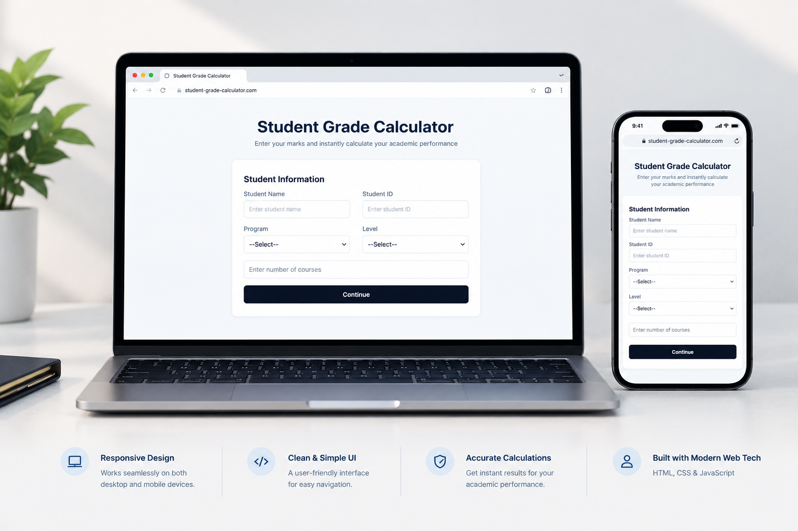

PAWLINK – Pet Adoption Platform
A user-friendly pet adoption platform designed to connect animals with loving homes through thoughtful UI/UX design.
PORTFOLIO PROJECTS
Explore software, web, and creative projects. Open any project for a short overview and available links.

A user-friendly pet adoption platform designed to connect animals with loving homes through thoughtful UI/UX design.

A bold, modern merchandise identity designed for apparel, accessories, and branded packaging.
Elegant logo design and cohesive brand identity for a premium tailoring and fashion brand.

An interactive number guessing game featuring helpful hints, real-time feedback, and a smooth, responsive gameplay experience.

A calming and user-friendly mental wellness website designed to help users explore guided meditations, relaxation techniques, and stress-relief resources.

A responsive academic tool for calculating student grades and tracking academic performance.

A modern brand identity featuring a distinctive logo and a professionally designed business card.

A modern online bottle store concept featuring intuitive navigation, engaging product displays, and a clean, user-friendly shopping experience.

A bold sports media identity for digital content, press conferences, and sports coverage.
A bold, minimalist logo combining a distinctive symbol with clean typography to create a modern brand identity.
A modern brand identity featuring bold geometry, clean typography, and a striking red and white color palette.